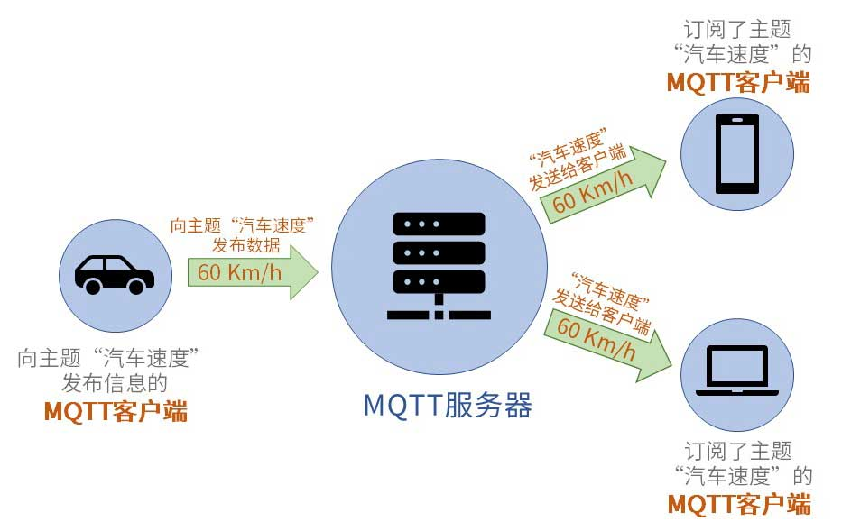
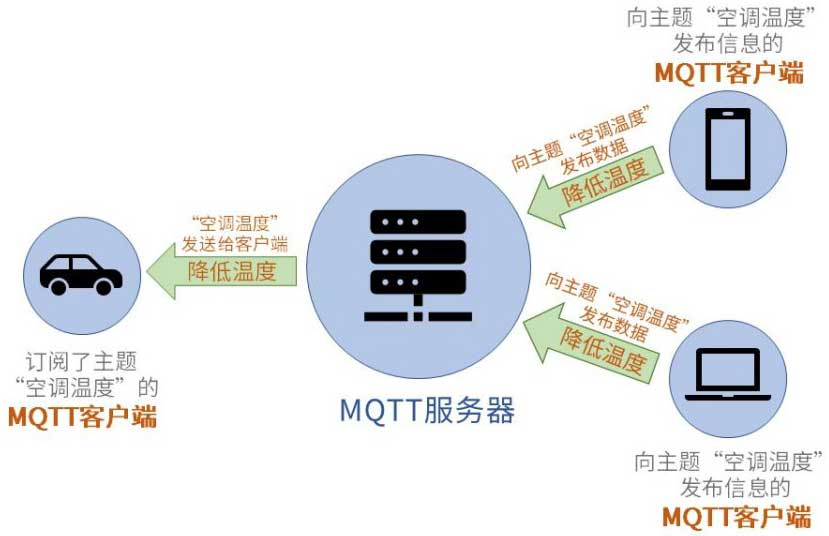

MQTT协议是当今世界上最受欢迎的物联网协议。它已广泛应用于车联网、智能家居、即时聊天应用和工业互联网等领域。目前通过MQTT协议连接的设备已经过亿，这些都得益于MQTT 协议为设备提供了稳定、可靠、易用的通信基础。
MQTT是一个客户端服务端架构的发布/订阅模式的消息传输协议。它的设计思想是轻巧、开放、简单、规范，易于实现。这些特点使得它对很多场景来说都是很好的选择，特别是对于受限的环境如机器与机器的通信（M2M）以及物联网环境（IoT）。
——MQTT协议规范中文版
以上MQTT（消息队列遥测传输协议）协议规范中的介绍很好地描述了MQTT的全部含义。它是一种轻量级协议，该协议构建于TCP/IP协议之上，MQTT最大优点在于，可以以极少的代码和有限的带宽，为连接远程设备提供实时可靠的消息服务。作为一种低开销、低带宽占用的即时通讯协议，使其在物联网、小型设备、移动应用等方面有较广泛的应用。
MQTT 从诞生之初就是专为低带宽、高延迟或不可靠的网络而设计的。虽然历经几十年的更新和变化，这仍然是MQTT协议的核心特点
MQTT协议工作在低带宽、不可靠的网络的远程传感器和控制设备通讯而设计的协议，它具有以下主要的几项特性：
（1）使用发布/订阅消息模式，提供一对多的消息发布，解除应用程序耦合。
（2）对负载内容屏蔽的消息传输。
（3）使用TCP/IP提供网络连接。
主流的MQTT是基于TCP连接进行数据推送的，但是同样有基于UDP的版本，叫做MQTT-SN。这两种版本由于基于不同的连接方式，优缺点自然也就各有不同了。
（4）有三种消息发布服务质量：
“至多一次”，消息发布完全依赖底层TCP/IP网络。会发生消息丢失或重复。这一级别可用于如下情况，环境传感器数据，丢失一次读记录无所谓，因为不久后还会有第二次发送。这一种方式主要普通APP的推送，倘若你的智能设备在消息推送时未联网，推送过去没收到，再次联网也就收不到了。
“至少一次”，确保消息到达，但消息重复可能会发生。
“只有一次”，确保消息到达一次。在一些要求比较严格的计费系统中，可以使用此级别。在计费系统中，消息重复或丢失会导致不正确的结果。这种最高质量的消息发布服务还可以用于即时通讯类的APP的推送，确保用户收到且只会收到一次。
（5）小型传输，开销很小（固定长度的头部是2字节），协议交换最小化，以降低网络流量。
这就是为什么在介绍里说它非常适合“在物联网领域，传感器与服务器的通信，信息的收集”，要知道嵌入式设备的运算能力和带宽都相对薄弱，使用这种协议来传递消息再适合不过了。
在MQTT协议通讯中，有两个最为重要的角色。它们分别是服务端和客户端。实现MQTT协议需要客户端和服务器端通讯完成，在通讯过程中，MQTT协议中有三种身份：发布者（Publish 客户端）、代理（Broker 服务端）、订阅者（Subscribe 客户端）。其中，消息的发布者和订阅者都是客户端，消息代理是服务端，消息发布者可以同时是订阅者。
MQTT传输的消息分为：主题（Topic）和负载（payload）两部分：
可以理解为消息的类型，订阅者订阅（Subscribe）后，就会收到该主题的消息内容（payload）；
可以理解为消息的内容，是指订阅者具体要使用的内容。
接下来我们来初步了解一下它们。
MQTT服务端通常是一台服务器。它是MQTT信息传输的枢纽，负责将MQTT客户端发送来的信息传递给MQTT客户端。MQTT服务端还负责管理MQTT客户端。确保客户端之间的通讯顺畅，保证MQTT消息得以正确接收和准确投递。
MQTT客户端可以向服务端发布信息，也可以从服务端收取信息。我们把客户端发送信息的行为成为“发布”信息。而客户端要想从服务端收取信息，则首先要向服务端“订阅”信息。“订阅”信息这一操作很像我们在视频网站订阅某一部电视剧。当这部电视剧上新后，视频网站会向订阅了该剧的用户发送信息，告诉他们有新剧上线了。
刚刚我们在讲解MQTT客户端订阅信息时，使用了用户在视频网站订阅电视剧这个例子。在MQTT通讯中，客户端所订阅的肯定不是一部部电视剧，而是一个个“主题”。MQTT服务端在管理MQTT信息通讯时，就是使用“主题”来控制的。
为了便于您更好理解服务端是如何通过主题来控制客户端之间的信息通讯，我们来看看下图实例：

在以上图示中一共有三个MQTT客户端。它们分别是汽车，手机和电脑。MQTT服务端在管理MQTT通讯时使用了“主题”来对信息进行管理的。比如上图所示，假设我们需要利用手机和电脑获取汽车的速度，那么我们首先要利用电脑和手机向MQTT服务器订阅主题“汽车速度”。接下来，当汽车客户端向服务端的“汽车速度”主题发布信息后，服务端就会首先检查以下都有哪些客户端订阅了“汽车速度”这一主题的信息。当它发现订阅了该主题的客户端有一个手机和一个电脑，于是服务端就会将刚刚收到的“汽车速度”信息转发给订阅了该主题的手机和电脑客户端。
在以上实例中，汽车是“汽车速度”主题的发布者，而手机和电脑则是该主题的订阅者。
值得注意的是，MQTT客户端在通讯时，往往角色不是单一的。它既可以作为信息发布者也可以同时作为信息订阅者。如下图所示：

上图中的所有客户端都是围绕“空调温度”这一主题进行通讯的。对于“空调温度”这一主题，手机和电脑客户端成为了MQTT信息的发布者而汽车则成为了MQTT信息的订阅者（接收者）。
可以看到，针对不同的主题，MQTT客户端可以切换自己的角色。它们可能对主题A来说是信息发布者，但是对于主题B就成了信息订阅者。
从以上实例我们可以看到，MQTT通讯的核心枢纽是MQTT服务端。有了服务端对MQTT信息的接收、储存、处理和发送，客户端在发布和订阅信息时，可以相互独立，且在空间上可以分离，时间上可以异步。这里所说的相互独立、空间和时间分离具体指的是什么呢？
MQTT客户端是一个个独立的个体。它们无需了解彼此的存在，依然可以实现信息交流。比如以上实例中汽车客户端在发布“汽车速度”信息时，汽车客户端本身可以完全不知道有多少个MQTT客户端订阅了“汽车速度”这一主题。而订阅了“汽车速度”主题的手机和电脑客户端也完全不知道彼此的存在。大家只要订阅了“汽车速度”主题，MQTT服务端就会在每次收到新信息时，将信息发送给订阅了“汽车速度”主题的客户端。
空间分离相对容易理解，MQTT客户端在通讯必要条件是连接到了同一个MQTT通讯网络。这个网络可以是互联网或者局域网。只要客户端联网，无论他们远在天边还是近在眼前，都可以实现彼此间的通讯交流。
MQTT客户端在发送和接收信息时无需同步。这一特点对物联网设备尤为重要。有时物联网设备会发生意外离线的情况。我们使用以上实例二的场景来作为示例。当我们的汽车在行驶过程中，可能会突然进入隧道，这时汽车可能会断开与MQTT服务端的连接。假设在此时我们的手机客户端向汽车客户端所订阅的“空调温度”主题发布了信息，而汽车恰恰不在线。这时，MQTT服务端可以将“空调温度”主题的新信息保存，待汽车再次上线后，服务端再将“空调温度”信息推送给汽车。
以上几点概括了MQTT通讯时客户端的相互关系以及服务端在其中所起的作用。讲到这里请您注意：以上总结的几个特点中都有一个“可”字。这个“可”字意味着客户端彼此之间可以独立，空间可以分离，时间可以异步。在我们实际应用中，客户端之间的关系既可以独立也可以相互依存。在空间上，既可以相距甚远，也可以彼此相邻。在时间上，既可以异步也可以同步。这个“可”字所体现的是MQTT通讯的灵活性。